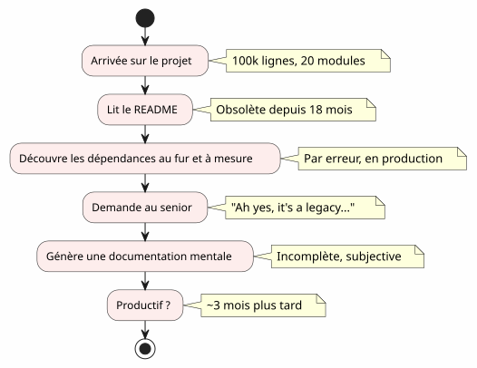
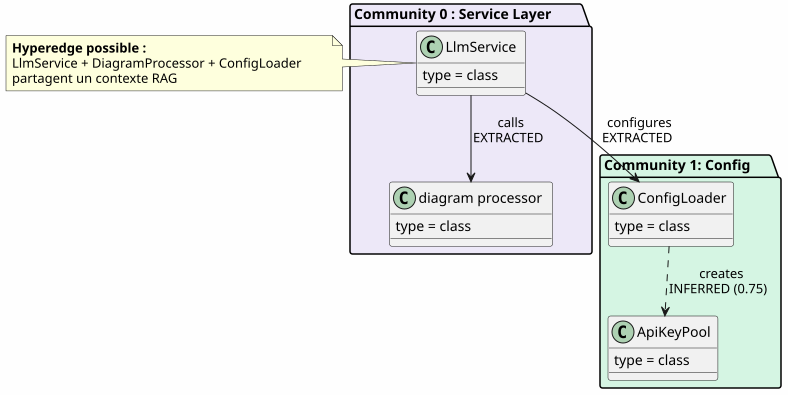
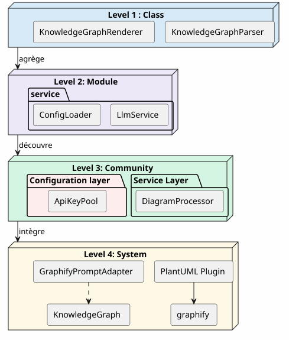
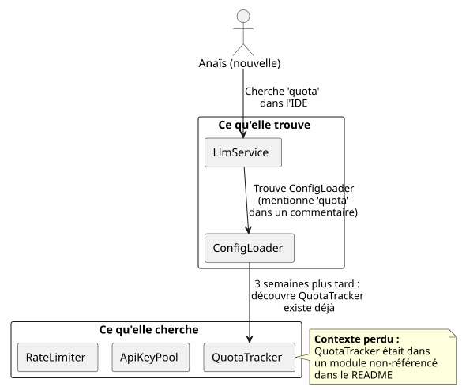
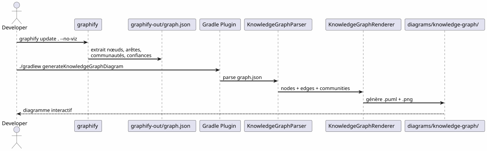
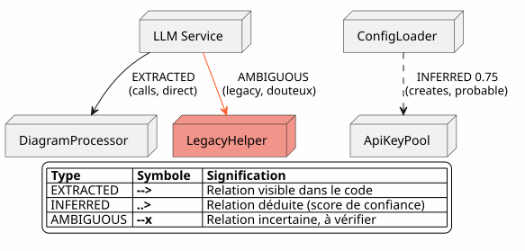

The Knowledge Graph as a tool for codebase understanding
Published on 20 April 2027
- The onboarding wall
- What is a Knowledge Graph?
- The 4 levels of understanding
- The lost context: a concrete scenario
- Pipeline: from code to map in one command
- Edge types: what confidence says
- "5 minutes to generate your own Knowledge Graph"
- Value for onboarding: the Anaïs scenario revisited
- Value for daily navigation
- Limits and perspectives
- Conclusion
You arrive at a project with 100,000 lines. Twenty modules, a hundred classes, invisible dependencies, a history of forgotten refactorings. The README promises a "microservices" architecture, but the code tells a different story. How long to become productive?Three months— if you’re lucky. And what if an automatically generated interactive code map could reduce that to three days?
- toc
-
[]
The onboarding wall
Every developer has experienced this scene:
-
Day 1: you are shown the README (last updated: 18 months ago)
-
Day 3: you discover that module`billing`secretly calls module`notification`
-
Day 7: a senior tells you "Oh yes, this class actually does two things, we planned to split it"
-
Day 14: you realize that all the business intelligence is in`utils/LegacyHelper.java`— a file that is referenced nowhere

The problem is not a lack of documentation — it’s thelack of a map. A map that shows the real territory, not the imaginary territory of the last redesign.
What is a Knowledge Graph?
A Knowledge Graph is a structured representation of theknowledgecontained in your codebase:
| Entity | Code example | Role in the graph |
|---|---|---|
Node |
Class, function, concept |
Graph vertex |
Edge |
Call, inheritance, import |
Link between two nodes |
Community |
Group of linked classes |
Visual cluster |
Edge type |
EXTRACTED, INFERRED, AMBIGUOUS |
Confidence in the relationship |
Confidence score |
0.0 à 1.0 |
Reliability of an INFERRED edge |
Hyperedge |
Relation between 3+ nodes |
Architectural complexity |

The difference with a simple UML diagram?A UML diagram shows what the developer decided to show. A Knowledge Graph shows what is actually there, including hidden dependencies and emerging concepts.
The 4 levels of understanding
A Knowledge Graph allows navigation atfour scales:

| Level | Question | Granularity | Tool |
|---|---|---|---|
1 — Class |
"What does this class do?" |
Line of code |
IDE, browser |
2 — Module |
"What are the files in this module?" |
Folder |
|
3 — Community |
"Which concepts work together?" |
Linked group |
Knowledge Graph |
4 — System |
"How does everything fit together?" |
Global architecture |
Complete KG diagram |
Without a Knowledge Graph, levels 3 and 4 areinaccessible— or at least, subjective and obsolete.
The lost context: a concrete scenario
Imagine a new developer, Anaïs, joining the project. She needs to add a "quota tracking" feature for LLM calls.

With a Knowledge Graph, Anaïs would have seen in5 minutes:
-
QuotaTracker`is linked to`ApiKeyPool(edgeEXTRACTED) -
RateLimiter`is linked to`QuotaTracker(edgeINFERRED, confidence 0.82) -
These three nodes form acommunity"Quota Management"
-
A hyperedge also links`LlmService`— the entry point
Pipeline: from code to map in one command
The Graphify + Gradle Plugin pipeline transforms your codebase into a PlantUML diagram intwo commands:

Zero LLM.Everything is deterministic: same code, same graph, same diagram. Reproducible, versionable, consultable offline.
Edge types: what confidence says

Edge types are crucial for onboarding:
-
EXTRACTED: you can navigate with confidence — it’s in the code
-
INFERRED(0.6-0.8) : probably correct, but check before refactoring
-
INFERRED(0.8+) : very reliable — use it as a reference
-
AMBIGUOUS: caution, sensitive point. Ask a senior.
"5 minutes to generate your own Knowledge Graph"

# 1. Installer graphify
pip install graphify==0.4.29
# 2. Générer le Knowledge Graph
graphify update . --no-viz
# 3. Vérifier le JSON
cat graphify-out/graph.json | jq '.nodes | length'
# → 47 nœuds
# 4. Générer le diagramme
./gradlew generateKnowledgeGraphDiagram
# 5. Filtrer par communauté
./gradlew generateKnowledgeGraphDiagram -Pplantuml.kg.community="service layer"
# 6. Limiter la taille
./gradlew generateKnowledgeGraphDiagram -Pplantuml.kg.maxNodes=20Value for onboarding: the Anaïs scenario revisited
With the Knowledge Graph, Anaïs’s scenario changes radically:

The Knowledge Graph does not replace the IDE— it complements it. The IDE shows where; the KG shows why and how it fits together.
Value for daily navigation
Onboarding is not the only use case. For a senior developer, the Knowledge Graph serves to:
| Use case | How the KG helps | Concrete example |
|---|---|---|
Refactoring |
Visualize hyperedges (3+ links) |
"These 5 classes are always linked — extract a module" |
Architecture review |
Detect AMBIGUOUS at boundaries |
"The call between billing and notification is uncertain" |
Debug |
Trace the EXTRACTED chain |
"Why does LlmService call LegacyHelper?" |
Onboarding |
Explore communities by filter |
"What is the 'service layer'?" |
Documentation |
Generate diagrams in the CI |
README always up to date |
Limits and perspectives
A Knowledge Graph is not a magic wand:
| Limit | Explanation | Workaround |
|---|---|---|
Static code only |
No runtime, no data flow |
Complement with APM traces |
INFERRED can be wrong |
Deduced edges require validation |
Confidence score + human review |
No business semantics |
The KG knows "LlmService calls ConfigLoader", not "it’s the auth entry point" |
Manual annotations or LLM post-processing |
No temporality |
A snapshot of the code, not its evolution |
Generate regularly + compare versions |
Perspectives:
-
KG Diff: compare two versions to see community shifts
-
Interactive KG: click on a node → open IDE at the corresponding line
-
Historical KG: visualize the evolution of communities over time (migrating technical debt)
Conclusion
The Knowledge Graph transforms asolitary and longact (understanding a codebase) into ashared and fastact (consulting a map).
This is not documentation — it ismapping. A map that updates automatically, shows the real territory, and allows every developer, new or senior, to navigate with confidence.
pip install graphify==0.4.29
graphify update . --no-viz
./gradlew generateKnowledgeGraphDiagram3 commands. 5 minutes. A map of your codebase.